Content
outline
iOS has TestFlight system that you can test your app by your tester or public test URL. in here, we introduce how to use TestFlight for the app test.
this blog post is a series. it’s better to see below together.
- iOS device test
- iOS build and test
- enroll iOS developer
- iOS Certification
- register iOS App store
- Deploy automatically applications via Fastlane
if you don’t know how to enroll Apple Developer Program or how to configure certification, see above blogs firts.
create App
we need to create new App to Apple Store Connect to use TestFlight. click below link to go to Apple Store Connect.
- App Store Connect: https://appstoreconnect.apple.com/
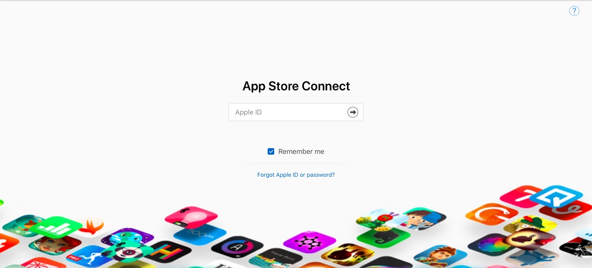
sign in with Developer Account which you enroll Apple Developer Program. if you don’t enroll Apple Developer Program, see enroll iOS developer blog and enroll.
after login, you can see below screen. click My Apps to go to app management page.
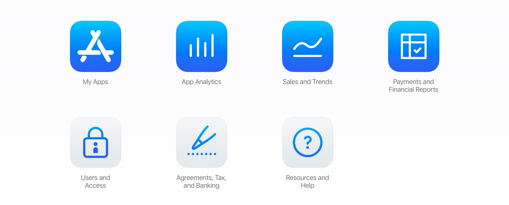
click + button on the left top of the page and select New App menu.
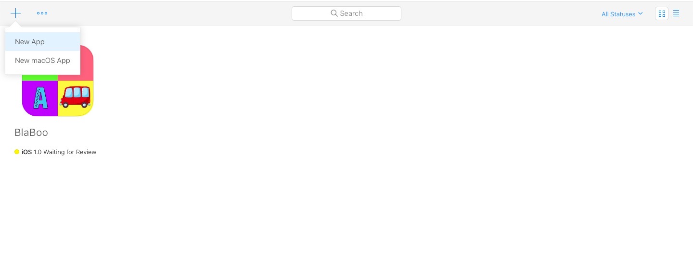
if you see app registration screen, insert your app information. if you don’t know exactly what it is, click ? mark to see details. you can change Name and Primary Language afterwards.
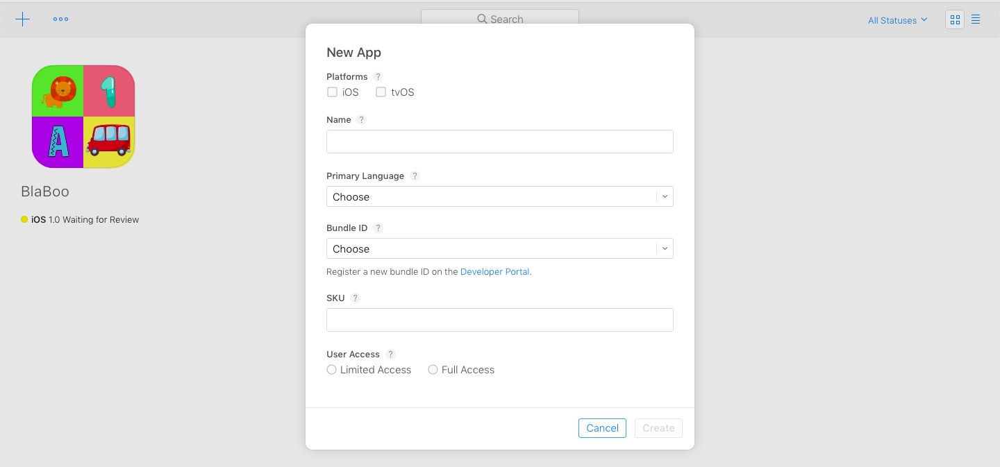
- Bundle ID: when you developed the app, you used
bundle IDin xcode. if you don’t know where it is, check previous blog iOS device test. - SKU: a unique ID for your app that is not visible on the App Store. normally use URL pattern.(ex> io.github.dev-yakuza.blaboo)
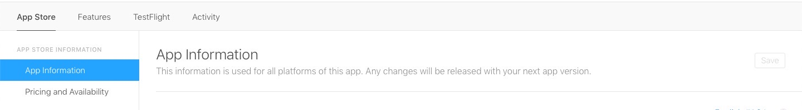
after creating new app, you can see above screen. click TestFlight menu.
now we need to upload production build app to App Store Connect for using TestFlight.
build app
let’s see how to build and upload the app to App Store Connect. if you have already production build app, it’s better to skip this section.
execute ios/projectname.xcodeproj file in RN(react native) project folder.
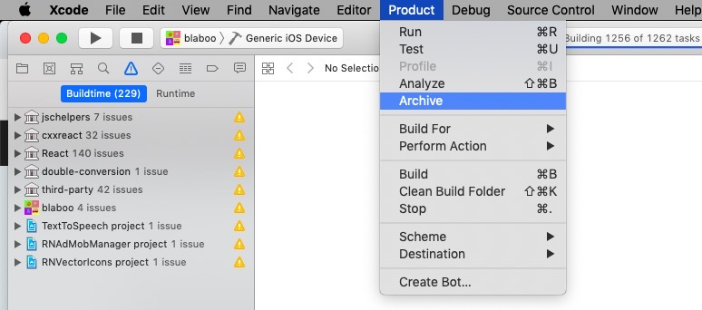
after xcode is exectued, click Product > Archive menu on the top of the screen. if you don’t enroll Apple Developer Program or connect certification, see previous blogs(enroll iOS developer, iOS Certification).
after building, you can see below screen.
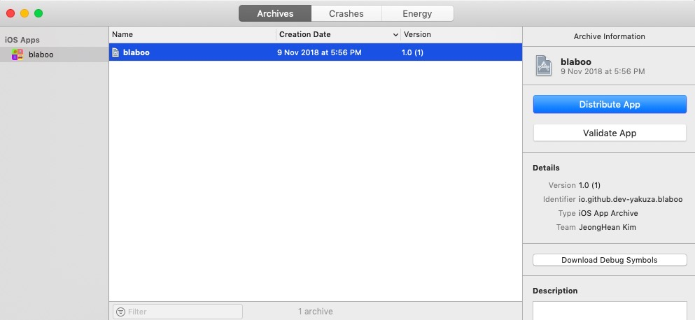
upload app
if you close the window which is appeared after building or if you have already production build file, click Window > Organizer menu on the top of xcode.
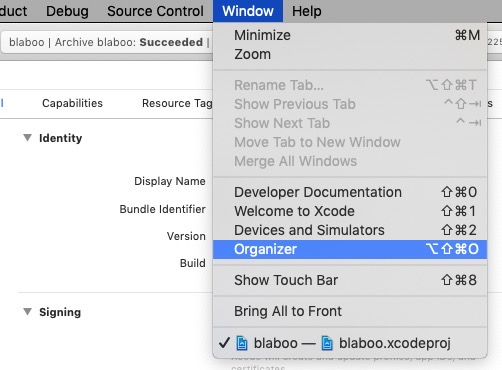
you can see below screen after building or clicking the menu.
click Distribute App on the right side. this button doesn’t deploy the app, just upload the app to App Store Connect.
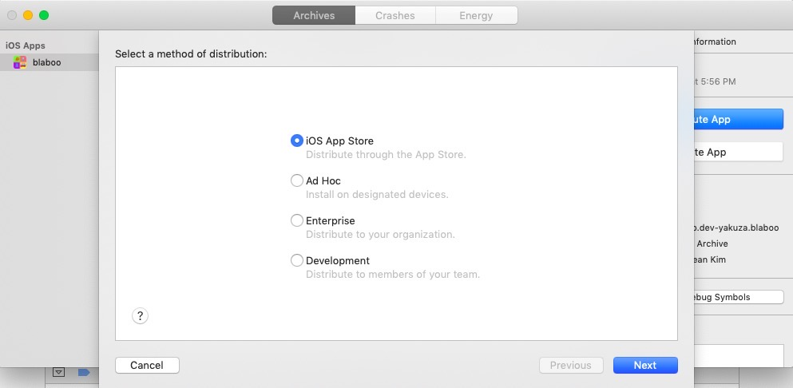
select the platform of the app. we selected iOS App Store in here.
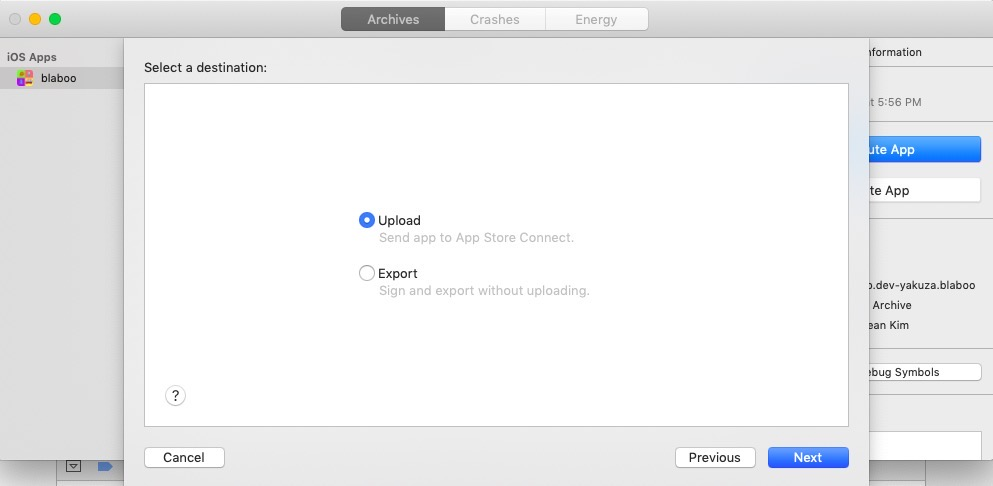
you
can see the choice screen for uploading to App Store Connect or
exporting ipa file. we will upload to App Store Connect, so select Upload.
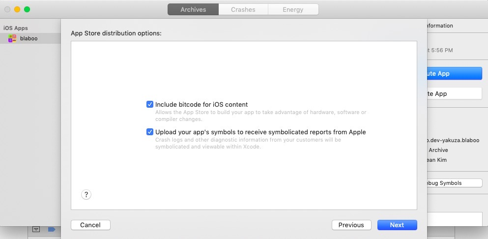
next is option selection screen. just click Next
with all checked status. select your certification and Provisioning
Profile created before. if you don’t have certification or Provisioning
Profile, see previous blog iOS Certification.
if xcode ready to upload, you can see below screen. click Upload button to upload the build app to App Store Connect.
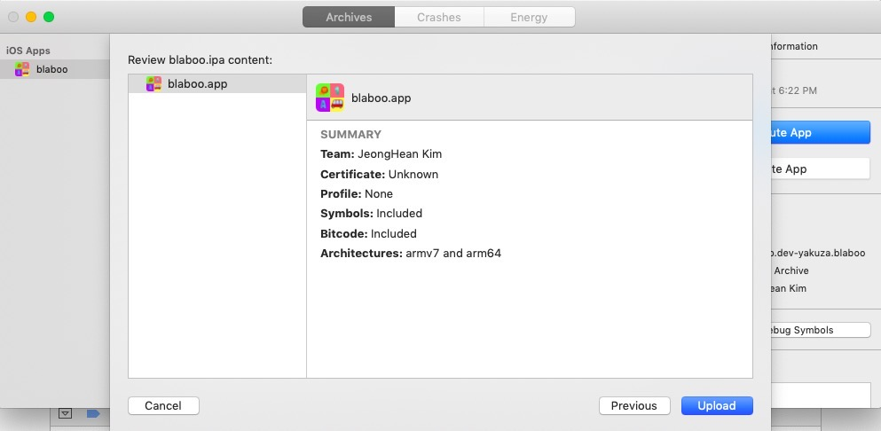
completed to upload the app to App Store Connect. if uploaded file is ready to use, you can get email from Apple. It takes a time from upload to arrival of mail.
create test group
after getting email from Apple, go to TestFlight page on App Store Connect.
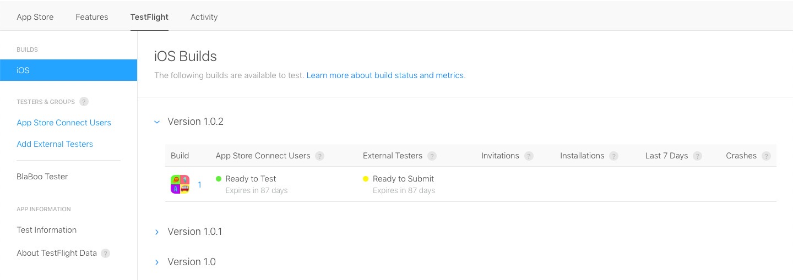
you can see the uploaded app on TestFlight screen. click Add External Testers button on the left side.
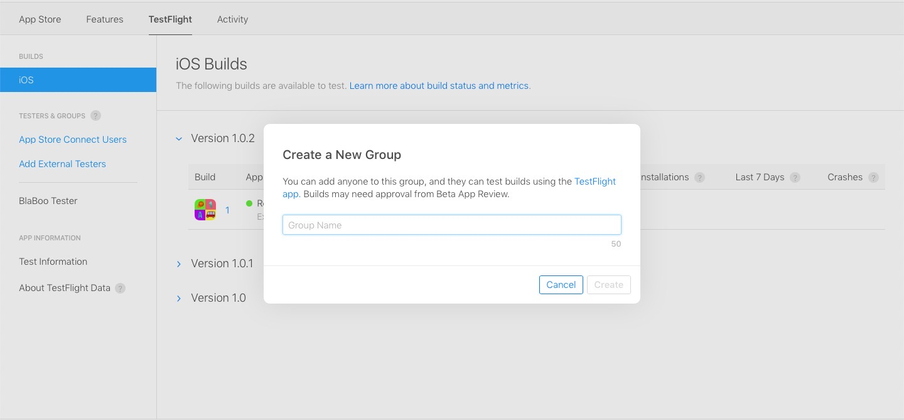
after creating new test group, you can see test group name on the left side menu. click group name.
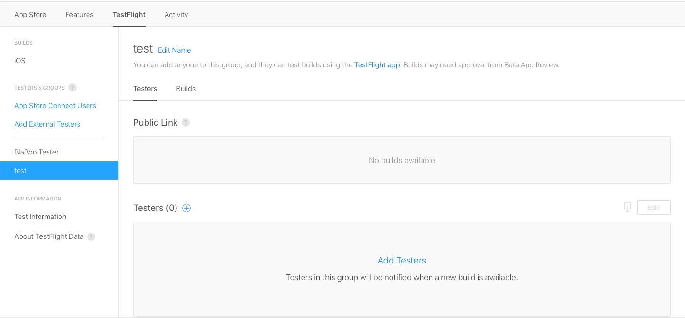
completed to create new test group. we will add build file and tester for testing.
add build file
select builds tab on the top of the screen
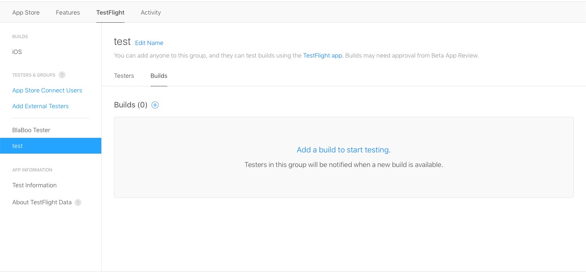
click + button on the beside of Builds(0). select build file you want to test and click Next button.
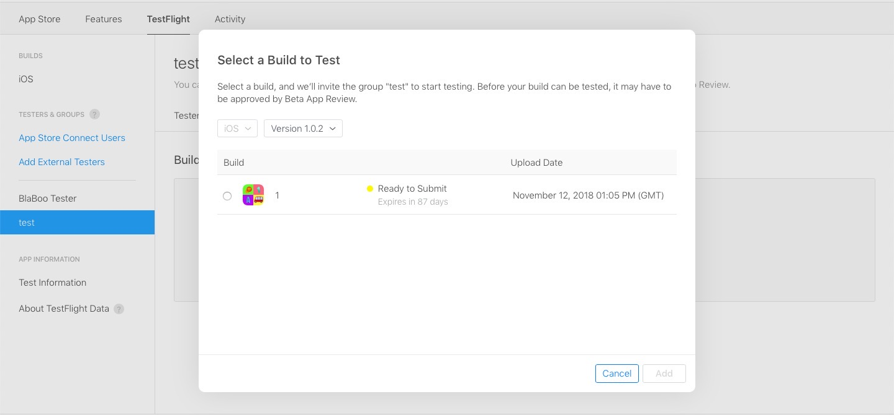
if your app need to signing for test, select Sign-in required and insert login info. click Next button.
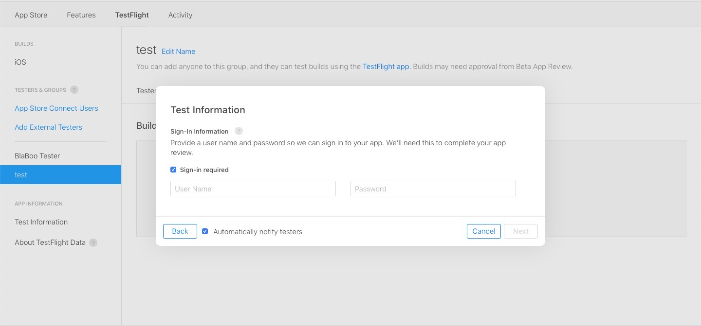
if you see below screen, insert a message to tester or how to test the app and click Submit for Review button.
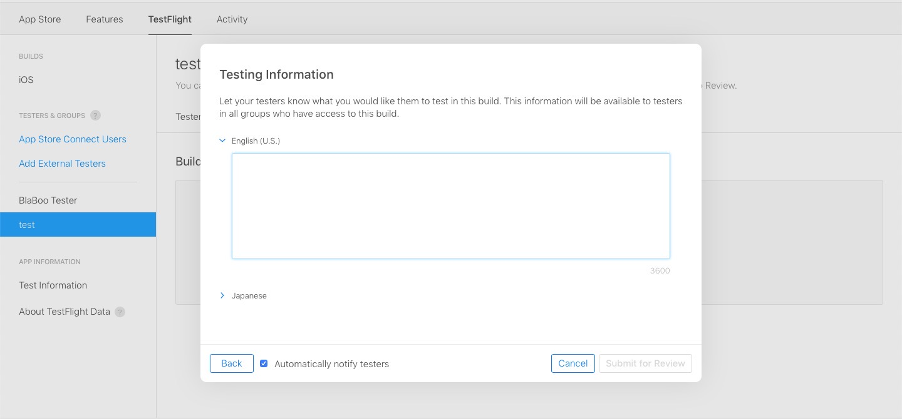
it is a simple Apple review procedure in TestFlight even if TestFlight is for your testers. after Apple’s review, you can test your app.
add Tester
Apple’s TestFlight
has two big features. add testers you already know or create public
test URL. first, we will introduce how to add testers. click test group on TestFlight page and click + button on the beside of Testers(0). select Add New Testers menu.
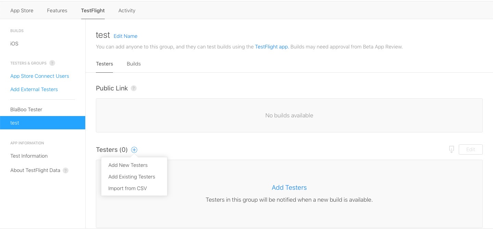
insert tester’s email and name. click Add button. tester’s email sould be App Store ID which testers download the app on their phone.
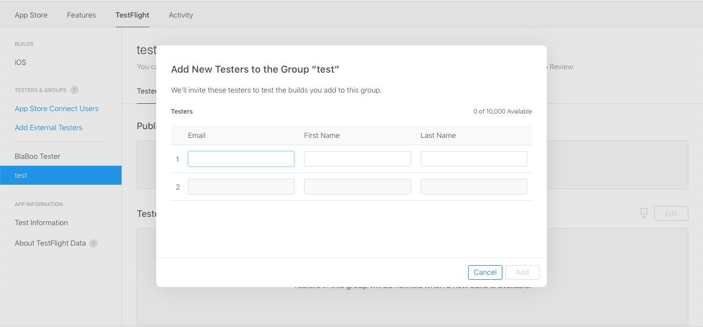
completed to add new testers. new testers will get email from TestFlight.
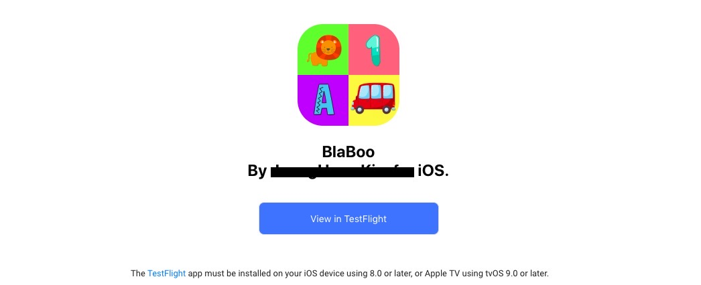
testers should search and donwload TestFlight app from App store and test the app.
public link
if you create public link, you can see the link from TestFlight page. copy and share public link for testing.
completed
we saw how to test the app using TestFlight. next, we will introduce how to public your app.
Was my blog helpful? Please leave a comment at the bottom. it will be a great help to me!